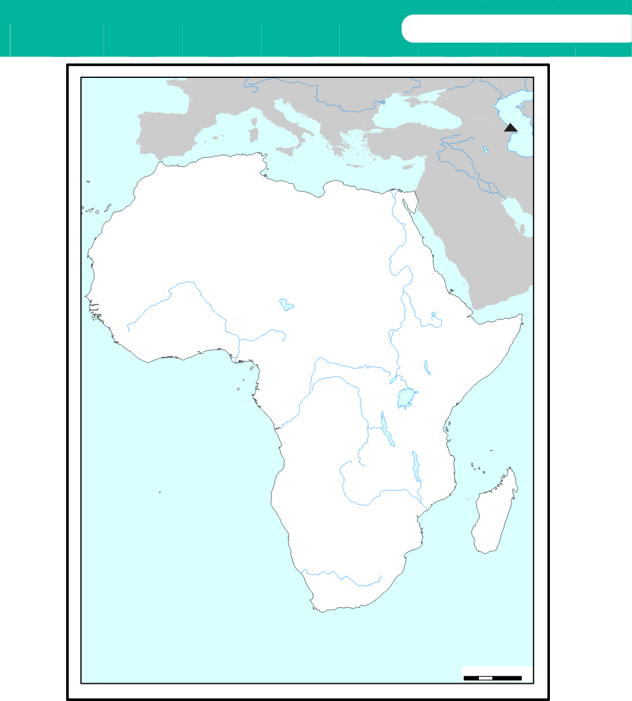

RhineDanubeDonUralFiratMuratEuphratesTigrisNBARLEYBARLEYWHEATWHEATBARLEYFLAXPEARL MILLETRICENigerYAMS OIL PALMYAMSGUINEA SORGHUML. ChadBenueOIL PALMPALM NUTSYAMSPEARL MILLETBICOLOR SORGHUMPASTORALISMSORGHUMPASTORALISMWHEATBARLEYPASTORALISMSORGHUMNileWhite NileBlue NileUbangiCongoBANANAFINGER MILLETPASTORALISMLualabaZambeziChireOrangeATLANTIC OCEANINDIAN OCEAN0 250 500 1,000 Km
Figure 4.1: Some pre-colonial African areas that practised agriculture